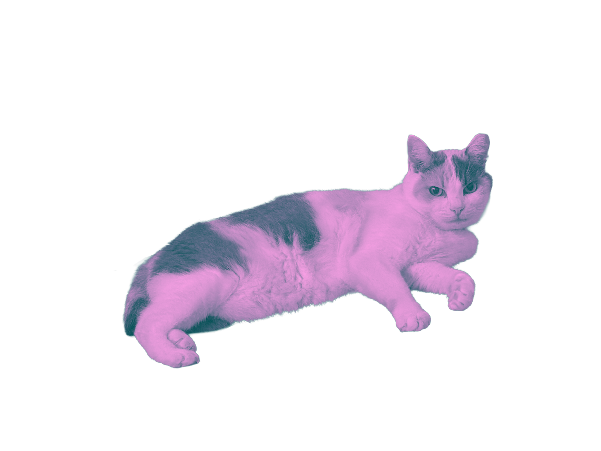

まなびやさかさまって、なに？
学校に行かなきゃいけないのはなんで？行かなかったらどうなるの？
なんのために行くの？とりあえず受験？その先は？
食い扶持になりえない仕事ってなに？堅実な仕事とは？資格は必要？
家賃はいくら？食費は？適切って、適宜ってなに？
生きていく過程で持つ疑問は、この宇宙に収まりきらないんじゃないかなんて思っている子どもでした。超新星大爆発。答えられる大人は居ないのだろうか。答えられなくてもいい、一緒に考えてくれないか。わたしはこれらに対応できる大人になりたかった。人生の壁打ち担当。
自律的な生きざま。他律的ではいけないの？ジャパニーズ。あかんことはない。
わたしとあなた。デジタルとアナログ。田舎と都会。女と男。陰と陽。
二元論では片付かない、なにかがあるはずだ。
さかさまな視点のデザイナーは、ただいまフリースクールプロジェクトを準備中です。
あなたの視点をつくるお手伝いがしたい。
なんだかいろいろ宣っておりますが、わたしの脳内を書き記しておきます。いずれ本格始動したら（ぜったいするので！）それぞれまとめてまいりまする。
どんな人が対象？
小学生〜大人の副業まで、PCやスマートフォンが使える人が対象。
デジタルツールもデザインも、本当はとっても身近なもの。まずは無料のツールから触れてみることで、適性を見極めていきます。やはり向き不向きってのがあるんですよね。
小学生向けのカリキュラムは1-2時間ほどの遊んで学べるワークショップを予定しています。
高校生以降の方を対象に、クリエイティブ業界で働くってどんな感じ？リモートワークって？フリーランスは稼げるの？というような、漠然とした質問にもお答えしつつ、現役のデザイナーがメンター・コーチとなり、完全オーダーメイドのロードマップを作って学習できるよう準備しています。
中の人、Webデザインスクールで講師もやってまいりましたが、受講者のWebリテラシーの低さが気になってしまいました。食われないで。強くなって。曇りなき眼で見定めて決めてやっておくれよ。
なにを学べる？
SNSで使う画像を無料で簡単に作る方法が知りたい
バナーなどのクリエイティブ制作
デザイナーの視点で解説します。
せっかくなので、デザインのことも知りたい
Webや紙媒体のデザイン制作
デザインを分解すると様々な要素が。色やレイアウト、それぞれの役割について、オタクは一生話せてしまいます。
自分のことや家族の仕事を宣伝したい
Webマーケティング／販促活動
人によって持ち物や向かう先は違います。あなただけの道がそこにはあるはず。
どんなツールで作るのがいい？
予算や用途、スキルに応じて適したツールを提案
情報や手段がありすぎる現代、選び方がむずかしい。無作為にやってみるのもよいかもしれないけど、膨大な時間と体力が要る。昭和スタイルでは。よかったら、今この瞬間デザインを生業にしている人の選択を参考にしてみてください。
目的がない
好きなものについてお話しする会、開催
生きていくのに目的なんてなくたっていい。好きなものを買うため、お金を稼ぐことが目標でもいいんじゃないかな。いちばん最初のわたしはそうでした。
パソコンを使って働きたい
ネットサーフィンのその先へ
デジタルツールを使って、自律的に生きる方法はたっくさんあります。オフィスで使うアプリケーションはもちろん、デザインやライティング、クリエイティブな表現方法、AIもあるし、有象無象…選択が難しい。親御さんや、お子さん、お孫さんには相談しづらいこともあるかもしれません。お気軽にお声がけください。
どこでやってるの？
現在は不定期開催かつ、場所も決まっておりません。（岐阜県安八郡神戸町の書店にてスペースを設ける予定で準備中です！）
おうちが落ち着く方には家庭教師スタイルで、電源の確保できるお好みの場所で。現在は西濃っこのみなさんと探り探り活動中。
ひとりでも大丈夫？
基本的には3名以下くらいの少人数制で、1名開催1on1が中心です。
教える人もですね、たくさんの人は苦手です。あとやっぱり、学ぶには集中が必要。
親御さんがいたほうが安心という場合は一緒に参加いただくことも可能です。
お金はかかるの？
無償です。日本を、この星をどうぞよろしく。お金を頂くことは想定しておりません。
ただ、その分中の人の主たる業務を優先することがあると思うので、日程や進め方は相談させてください。
気になることなど、なんなりと
お気軽にお声がけください。
※さかさまのお問い合わせページに遷移します。
